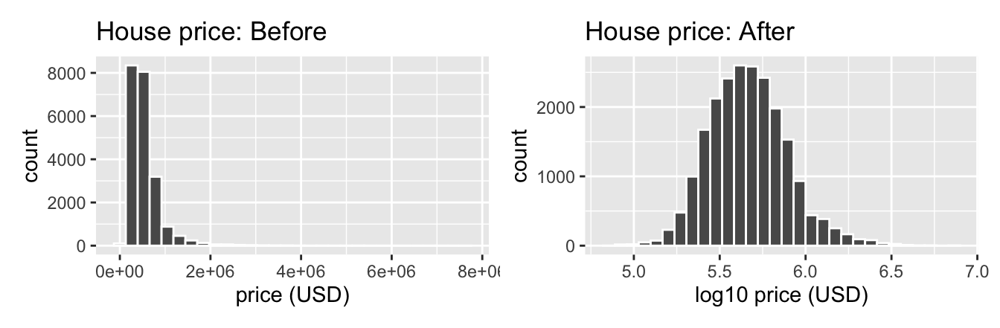
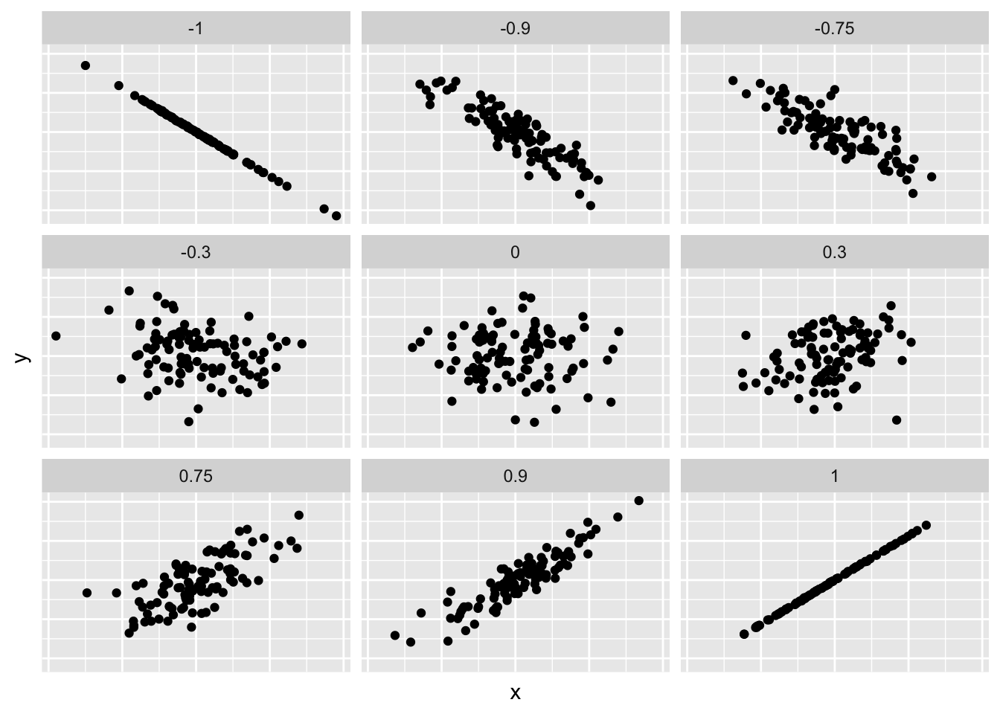
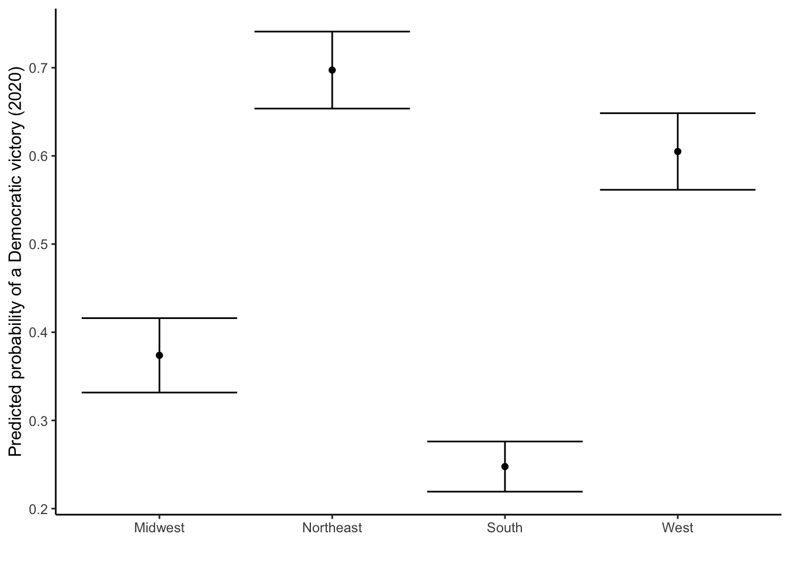
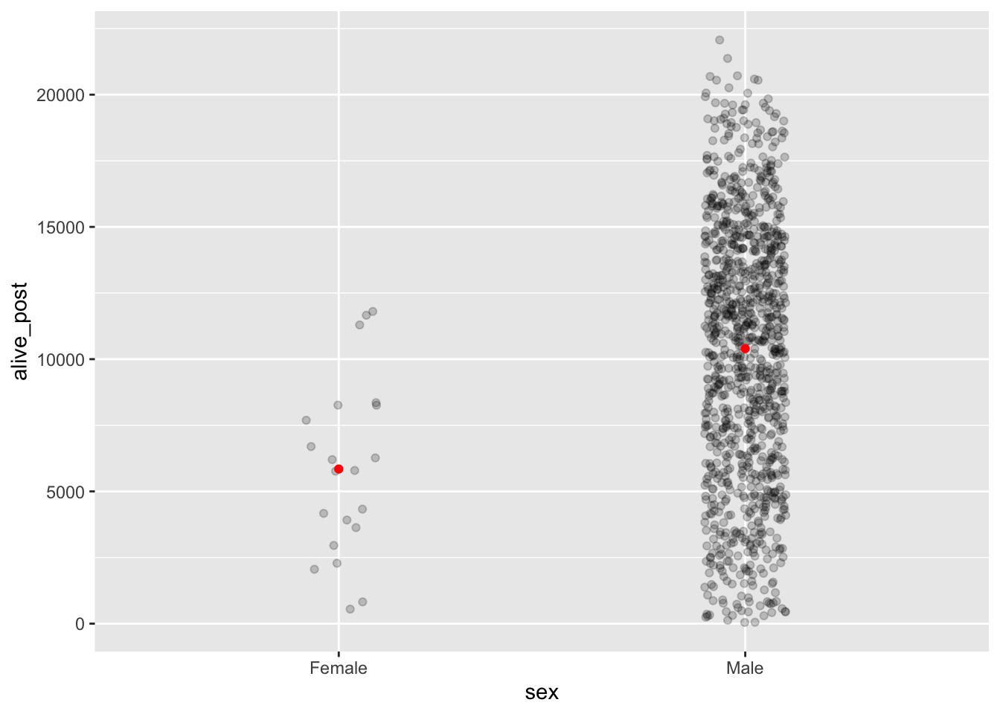

Chapter 12 Discrete Response
Many questions have binary answers. These questions can be answered by any pair of two answers (such as yes/no). Two examples of these questions include: a. Are students with below average grades more likely to binge drink? b. Is exposure to a particular chemical associated with a cancer diagnosis?
Binary responses take on only two values: success (\(Y=1\)) or failure (\(Y=0\)), yes (\(Y=1\)) or no (\(Y=0\)), et cetera. Examples (a) and (b) above have binary responses (Does a student binge drink? Was a patient diagnosed with cancer?). Binary responses are one of the most common types of data that statisticians encounter. We are often interested in modeling the probability of success, \(p\), based on a set of covariates. As with regression, there are two broad categories of problems: modeling for explanation and modeling for prediction. Although terminology varies across fields, “regression” is generally used for situations in which our dependent variable is continuous. “Classification” applies to cases in which the dependent variable is binary.
All of the new models touched upon in this chapter speak to the wider discussion of fitting our model structures to better fit what is being measured in the world. Using logistical regressions of any type more accurately describe the measured effect when dealing with binary variables.
In this chapter, we will look at three common techniques of classification of binary data. First, we will consider logistic regression, which is similar conceptually to the linear regression models we considered in Chapters 10 and 11. Second, we will consider classification and regression trees (CART). Third, we will discuss random forests.
Needed packages
Start with the tidyverse as usual.
12.1 Logistic regression
12.1.1 What is logistic regression?
Figure 12.1 illustrates a data set with a binary (0 or 1) response (\(Y\)) and a single continuous predictor (\(X\)). The blue line is a linear regression to model the probability of a success (\(Y=1\)) for a given value of \(X\). With a binary response, the linear regression has an obvious problem: it can produce predicted probabilities below 0 and above 1. Probabilities can only range from 0 up to and including 1 as these represent a 0% and 100% chance of an event happening, respectively.
The red curve is the logistic regression curve. Note that its characteristic “S” shape always produces predicted probabilities between 0 and 1. Here is the formula for a logistic regression:
Where \(p\) is the probability of a “yes” or “success” for a given set of predictors \(X\).
FIGURE 12.1: Linear vs. logistic regression models for binary response data.

The mathematical function \(log\left(\frac{p}{1 - p}\right)\) is called the logit function and it transforms variables from the space \((0, 1)\) (like probabilities) to \((-\infty, \infty)\). The inverse of that function, the standard logistic function, is \(\frac{1}{1 + e^{-x}}\) and transforms variables from the space \((-\infty, \infty)\) to \((0, 1)\). From that latter function’s name we get the terminology of logistic regression.
12.1.2 House elections: exploratory data analysis
What affects whether a Democrat or Republican wins a race in the U.S. House of Representatives? This is an example of a binary response: either a Democrat wins (and a Republican loses) or a Republican wins (and a Democrat loses).16 It is rare that third party candidates mount serious bids in U.S. House elections, so it isn’t a much of an oversimplication to think of the variable as binary. In this section, we are going to consider several models predicting Democratic victory in House races. First, we will consider a single categorical variable as a predictor, the region in which a district lies: Midwest, Northeast, South, or West. Second, we will consider a single continuous variable: year. Finally, we fill fit a model that contains both separately, and than also an interaction between the two.
The data on House election results from 1976 to 2018 can be found in the house_results data frame in politicaldata package. We’ll create a version of this data frame called house_ch12 that creates a new column dem_win that notes for each state if the Democratic candidate in a congressional district received more votes than the other candidates. We’ll also join it with the state_info data frame in the fivethirtyeight package to add the region of each state.
library(politicaldata)
house_ch12 <- house_results %>%
# Create dem_win variable
mutate(dem = ifelse(is.na(dem), 0, dem),
other = ifelse(is.na(other), 0, other),
rep = ifelse(is.na(rep), 0, rep),
dem_win = ifelse(dem > rep & dem > other, 1, 0)) %>%
# Rename to join with state_info
rename(state_abbrev = state_abb) %>%
left_join(state_info) %>%
select(region, state, district, year, dem_win)## Joining, by = "state_abbrev"Recall the three common steps in an exploratory data analysis we saw in Subsection 10.1.1:
- Looking at the raw data values.
- Computing summary statistics.
- Creating data visualizations.
Let’s first look at the raw data values by either looking at house_ch12 using RStudio’s spreadsheet viewer or by using the glimpse() function from the dplyr package:
## Rows: 9,557
## Columns: 5
## $ region <chr> "West", "South", "South", "South", "South", "South", "South"…
## $ state <chr> "Alaska", "Alabama", "Alabama", "Alabama", "Alabama", "Alaba…
## $ district <chr> "AK-AL", "AL-01", "AL-02", "AL-03", "AL-04", "AL-05", "AL-06…
## $ year <dbl> 1976, 1976, 1976, 1976, 1976, 1976, 1976, 1976, 1976, 1976, …
## $ dem_win <dbl> 0, 0, 0, 1, 1, 1, 0, 1, 1, 1, 0, 1, 0, 1, 1, 0, 1, 0, 1, 1, …Let’s also display a random sample of 5 rows of the 9,557 rows corresponding to different district-years. Remember due to the random nature of the sampling, you will likely end up with a different subset of 5 rows.
| Region | State | Distrct | Year | Democrat Win? |
|---|---|---|---|---|
| West | California | CA-50 | 2012 | 0 |
| Northeast | New York | NY-27 | 1984 | 0 |
| Northeast | New York | NY-34 | 1978 | 0 |
| South | Florida | FL-06 | 2008 | 0 |
| Midwest | Michigan | MI-15 | 1988 | 1 |
| A random sample of 5 out of the 4,201 district-years | ||||
Now that we’ve looked at the raw values in our house_ch12 data frame and got a sense of the data, let’s compute summary statistics. As we’ve done in our exploratory data analyses before, let’s use the skim() function from the skimr package, being sure to only select() the variables of interest in our model:
| Name | Piped data |
| Number of rows | 9557 |
| Number of columns | 3 |
| _______________________ | |
| Column type frequency: | |
| character | 1 |
| numeric | 2 |
| ________________________ | |
| Group variables | None |
Variable type: character
| skim_variable | n_missing | complete_rate | min | max | empty | n_unique | whitespace |
|---|---|---|---|---|---|---|---|
| region | 0 | 1 | 4 | 9 | 0 | 4 | 0 |
Variable type: numeric
| skim_variable | n_missing | complete_rate | mean | sd | p0 | p25 | p50 | p75 | p100 | hist |
|---|---|---|---|---|---|---|---|---|---|---|
| dem_win | 0 | 1 | 0.54 | 0.5 | 0 | 0 | 1 | 1 | 1 | ▇▁▁▁▇ |
| year | 0 | 1 | 1997.00 | 12.7 | 1976 | 1986 | 1998 | 2008 | 2018 | ▇▆▆▆▇ |
Observe that we have no missing data, that we have 9,557 observations, and that the mean of dem_win is 0.54, indicating that Democrats won 54% of the House elections in this period (1976–2018).
Let’s now perform the last of the three common steps in an exploratory data analysis: creating data visualizations.
For our categorical variable, we’ll look at histograms of dem_win faceted by region:
house_ch12 %>%
ggplot(aes(x = dem_win)) +
geom_histogram(bins = 10, color = "white") +
labs(x = "Democratic victory percentage, 1976-2018",
y = "Number of districts",
title = "Histogram of distribution of Democratic victories by House district") +
facet_wrap(~ region) +
theme_minimal()
Wait! That doesn’t tell us very much, because our outcome variable only takes two values, 0 and 1. Let’s instead group_by(district) and summarize() to get a better sense of the distributions:
house_ch12 %>%
group_by(region, district) %>%
summarize(dem_win = mean(dem_win)) %>%
ggplot(aes(x = dem_win)) +
geom_histogram(bins = 10, color = "white") +
labs(x = "Democratic victory percentage, 1976-2018",
y = "Number of districts",
title = "Histogram of distribution of Democratic victories by House district") +
facet_wrap(~ region) +
theme_minimal()## `summarise()` regrouping output by 'region' (override with `.groups` argument)
This is much more informative! We can see that the Midwest is highly bimodal, with many districts either electing Democrats for every year in this period or for none. The Northeast and West have many districts that always elect Democrats but few that never do. The South is the only region with a peak in the middle, indicating that there are many districts in the South that elected Democrats for about half the time during 1976-2018.
What happens if we create a scatterplot of our outcome variable dem_win and a continuous predictor, year?
house_ch12 %>%
ggplot(aes(x = year, y = dem_win)) +
geom_point() +
labs(x = "Year", y = "Democratic Victory") +
geom_smooth(method = "lm", se = FALSE)## `geom_smooth()` using formula 'y ~ x'
This is incomprehensible! When dealing with binary data, it is more helpful to construct an empirical logit plot instead of a regular scatterplot. An empirical logit is a linear model on logit-trasnformed data rather than a generalized linear model. The steps for constructing such a plot are as follows:
-
group_byyour continuous variable. -
summarizethe percentage of successes in your outcome variable. - Calculate the empirical logit for each group, using the logit function: \(log\left(\frac{p}{1 - p}\right)\). This step transforms the data to fit the form of a logistical regression with a binary outcome.
- Plot the results.
The logit function exists in base R as qlogis(). Let’s look at the empirical logit plot:
house_ch12 %>%
group_by(year) %>%
summarize(perc_dem_win = mean(dem_win),
emplogit = qlogis(perc_dem_win)) %>%
ggplot(aes(x = year, y = emplogit)) +
geom_point() +
geom_smooth(method = "lm") +
labs(x = "Year",
y = "Empirical logits") +
theme_classic()## `summarise()` ungrouping output (override with `.groups` argument)## `geom_smooth()` using formula 'y ~ x'
Now we see that after the logit transformation, there is roughly a linear relationship between our outcome variable and our explanatory variable year. This means that a logistic regression model makes sense. Some of the most visually apparent outliers will be familiar to students of American politics: 1994 (the “Republican Revolution”), 2008 (Obama’s first election), and 2018. Yet in general it appears that over time the Democrats have performed worse in House elections.
We can follow the same steps to look at this relationship within Census regions (Midwest, Northeast, South and West):
house_ch12 %>%
group_by(region, year) %>%
summarize(perc_dem_win = mean(dem_win),
emplogit = qlogis(perc_dem_win)) %>%
ggplot(aes(x = year, y = emplogit)) +
geom_point() +
geom_smooth(method = "lm") +
labs(x = "Year",
y = "Empirical logits") +
facet_wrap(~ region) +
theme_classic()## `summarise()` regrouping output by 'region' (override with `.groups` argument)## `geom_smooth()` using formula 'y ~ x'
We see roughly linear relationships after the logit transformation within-region as well, although the relationship looks more linear in the Midwest and South than in the Northeast and West. We see that the Democratic Party’s overall decline in House races is driven by the South and to a lesser extent the Midwest; Democratic performance has on average improved in the Northeast and West. The sharp negative slope in the South will not be surprising if one is familiar with the collapse of the “Solid South.”
12.1.3 One categorical explanatory variable
Let’s start our modeling by predicting dem_win with a single categorical explanatory variable. We’ll start with a binary variable for whether an observation is in the South and we will progress to the categorical variable region. As we’ll see, the syntax for running a logistic regression in R is very similar to that for running a linear regression. In fact, we’ll follow the same basic steps:
- We first “fit” the logistic regression model using the
glm(y ~ x, family, data)function and save it inhouse_region_model. - We get the regression table by applying the
tidy()function from the broom package tohouse_region_model. We’ll print theterm,estimate,conf.low, andconf.highcolumns.
Note that the key difference is that instead of using lm(), we are now using glm(). glm() operates very similarly to lm(), but it has an additional argument: family. To run a logistic regression, we use family = binomial.
Let’s create a binary variable for whether an observation is in the South:
Next, let’s fit a model and tidy() it:
house_south_model <- glm(dem_win ~ south, family = binomial, data = house_ch12)
house_south_model %>%
tidy(conf.int = TRUE) %>%
select(term, estimate)| term | estimate |
|---|---|
| (Intercept) | 0.23 |
| south | -0.25 |
How can we interpret the coefficients? Unlike linear regressions, these coefficients aren’t directly interpretable. Recall our logistic regression model equation:
\[ \log\left(\frac{p}{1 - p}\right)=\beta_0+\beta_1X \]
A one-unit change in \(X\) thus is associated with a one-unit change in \(log\left(\frac{p}{1 - p}\right)\), where \(p\) is the predicted probability of success. It is hard to understand intuitively what this means.
However, with only two possible values for the predictors (south = 0 or south = 1), we can directly calculate all the possible values of \(p\) this model by using the standard logistic function:
\[ p = \frac{1}{1 + e^{-(\beta_0+\beta_1X)}} \]
This can easily be done using the plogis() function in R.
Thus, for our example, we have:
\[ p_{dem\_win} = \frac{1}{1 + e^{-(0.230 - 0.249 \times south)}} \]
Therefore, the predicted probability for an observation in the South is \(\frac{1}{1 + e^{-(0.230 - 0.249)}}\) (0.5) and the predicted probability for an observation outside the South is \(\frac{1}{1 + e^{-(0.230)}}\) (0.56) a difference of -0.06. Thus, an observation being the South is associated with a -0.06 decrease in the predicted probability of a Democratic victory.
Note that you could also estimate this value through the so-called “divide by 4” rule: \(-0.249 / 4 \approx 0.062\). We’ll discuss this further when we talk about interpreting the coefficiences of continuous predictors in logistic regression models.
Let’s now estimate the uncertainty around our coefficients. We’ll start by showing how you can do this through the bootstrap. We’ll begin by loading the infer package. We’re going to use the function rep_sample_n() to resample from our data 1,000 times:
library(infer)
x <- house_ch12 %>%
select(dem_win, south) %>%
rep_sample_n(size = nrow(house_ch12), replace = TRUE, reps = 1000)
x## # A tibble: 9,557,000 x 3
## # Groups: replicate [1,000]
## replicate dem_win south
## <int> <dbl> <dbl>
## 1 1 0 0
## 2 1 1 0
## 3 1 0 0
## 4 1 1 1
## 5 1 0 0
## 6 1 0 0
## 7 1 1 0
## 8 1 1 1
## 9 1 0 0
## 10 1 0 0
## # … with 9,556,990 more rowsFor each replicate, we have 9557 resamples of dem_win and south.
Next, we are going to nest() our data by replicate:
## # A tibble: 1,000 x 2
## # Groups: replicate [1,000]
## replicate data
## <int> <list>
## 1 1 <tibble [9,557 × 2]>
## 2 2 <tibble [9,557 × 2]>
## 3 3 <tibble [9,557 × 2]>
## 4 4 <tibble [9,557 × 2]>
## 5 5 <tibble [9,557 × 2]>
## 6 6 <tibble [9,557 × 2]>
## 7 7 <tibble [9,557 × 2]>
## 8 8 <tibble [9,557 × 2]>
## 9 9 <tibble [9,557 × 2]>
## 10 10 <tibble [9,557 × 2]>
## # … with 990 more rowsAfter grouping by replicate and using nest(), we now have a dataset of 1,000 rows and a list column named data. Each element of data is a tibble consisting of one of the resampled datasets we created using rep_sample_n().
Now, we can use map() to run our logistic regression for each dataset:
## # A tibble: 1,000 x 3
## # Groups: replicate [1,000]
## replicate data mod
## <int> <list> <list>
## 1 1 <tibble [9,557 × 2]> <glm>
## 2 2 <tibble [9,557 × 2]> <glm>
## 3 3 <tibble [9,557 × 2]> <glm>
## 4 4 <tibble [9,557 × 2]> <glm>
## 5 5 <tibble [9,557 × 2]> <glm>
## 6 6 <tibble [9,557 × 2]> <glm>
## 7 7 <tibble [9,557 × 2]> <glm>
## 8 8 <tibble [9,557 × 2]> <glm>
## 9 9 <tibble [9,557 × 2]> <glm>
## 10 10 <tibble [9,557 × 2]> <glm>
## # … with 990 more rowsNow we have a new list column, mod, that contains the model objects created by glm(). We will now want to tidy() the object created by glm():
## # A tibble: 1,000 x 4
## # Groups: replicate [1,000]
## replicate data mod reg_results
## <int> <list> <list> <list>
## 1 1 <tibble [9,557 × 2]> <glm> <tibble [2 × 5]>
## 2 2 <tibble [9,557 × 2]> <glm> <tibble [2 × 5]>
## 3 3 <tibble [9,557 × 2]> <glm> <tibble [2 × 5]>
## 4 4 <tibble [9,557 × 2]> <glm> <tibble [2 × 5]>
## 5 5 <tibble [9,557 × 2]> <glm> <tibble [2 × 5]>
## 6 6 <tibble [9,557 × 2]> <glm> <tibble [2 × 5]>
## 7 7 <tibble [9,557 × 2]> <glm> <tibble [2 × 5]>
## 8 8 <tibble [9,557 × 2]> <glm> <tibble [2 × 5]>
## 9 9 <tibble [9,557 × 2]> <glm> <tibble [2 × 5]>
## 10 10 <tibble [9,557 × 2]> <glm> <tibble [2 × 5]>
## # … with 990 more rowstidy() stores the coefficients in the estimate column, with each coefficient named in the term column. Thus, if we filter() by term and pull(estimate), we can get the logistic regression coefficient for each bootstrap sample:
x <- x %>%
mutate(disp_coef = map_dbl(reg_results, ~ filter(., term == "south") %>% pull(estimate)))
x## # A tibble: 1,000 x 5
## # Groups: replicate [1,000]
## replicate data mod reg_results disp_coef
## <int> <list> <list> <list> <dbl>
## 1 1 <tibble [9,557 × 2]> <glm> <tibble [2 × 5]> -0.247
## 2 2 <tibble [9,557 × 2]> <glm> <tibble [2 × 5]> -0.289
## 3 3 <tibble [9,557 × 2]> <glm> <tibble [2 × 5]> -0.205
## 4 4 <tibble [9,557 × 2]> <glm> <tibble [2 × 5]> -0.223
## 5 5 <tibble [9,557 × 2]> <glm> <tibble [2 × 5]> -0.207
## 6 6 <tibble [9,557 × 2]> <glm> <tibble [2 × 5]> -0.201
## 7 7 <tibble [9,557 × 2]> <glm> <tibble [2 × 5]> -0.222
## 8 8 <tibble [9,557 × 2]> <glm> <tibble [2 × 5]> -0.316
## 9 9 <tibble [9,557 × 2]> <glm> <tibble [2 × 5]> -0.248
## 10 10 <tibble [9,557 × 2]> <glm> <tibble [2 × 5]> -0.225
## # … with 990 more rowsNow that we have 1,000 estimates from our bootstrap samples, we can construct a percentile-based confidence interval easily:
## 2.5% 50% 98%
## -0.33 -0.25 -0.17As we’ve seen before, these are very similar to what we observe using tidy(conf.int = TRUE):
| term | estimate | conf.low | conf.high |
|---|---|---|---|
| (Intercept) | 0.23 | 0.18 | 0.28 |
| south | -0.25 | -0.33 | -0.16 |
| Logistical Regression Table | |||
Thus, from now on, we’ll just use tidy(conf.int = TRUE) when working with glm(), just as we did with lm().
Let’s try running a slightly more complicated version of the above model, where we use region as a predictor instead of south.
house_region_model <- glm(dem_win ~ region, family = binomial, data = house_ch12)
house_region_model %>%
tidy(conf.int = TRUE) %>%
select(term, estimate, conf.low, conf.high)| term | estimate | conf.low | conf.high |
|---|---|---|---|
| (Intercept) | -0.076 | -0.16 | 0.0057 |
| regionNortheast | 0.657 | 0.53 | 0.7803 |
| regionSouth | 0.056 | -0.05 | 0.1629 |
| regionWest | 0.333 | 0.21 | 0.4528 |
| Logistical Regression Table | |||
The intercept here is the omitted category, the Midwest. We can calculate the predicted probabilities for each category:
- Midwest: \(\frac{1}{1 + e^{-(-0.076)}} = 0.481\)
- Northeast: \(\frac{1}{1 + e^{-(-0.076 + 0.657)}} = 0.641\)
- South: \(\frac{1}{1 + e^{-(-0.076 + 0.056)}} = 0.495\)
- West: \(\frac{1}{1 + e^{-(-0.076 + 0.333)}} = 0.564\)
We can then interpret the effect of moving from one category to another. For example, the effect of being in the Northeast as opposed to the Midwest is 0.16; the predicted probability of a Democratic victory in the Northeast is 0.16 greater than in the Midwest. Note too that we could have obtained this through the “divide by 4” rule: \(0.657 / 4 \approx 0.16\).
12.1.4 Observed/fitted values and residuals
We have previously defined the following three concepts for a linear regression:
- Observed values \(y\), or the observed value of the outcome variable
- Fitted values \(\widehat{y}\), or the value on the regression line for a given \(x\) value
- Residuals \(y - \widehat{y}\), or the error between the observed value and the fitted value
We obtained these values and other values using the augment() function from the broom package. Recall too that we used the .se.fit column to construct confidence intervals. We’ll see here how we can apply these same concepts to logistic regression.
regression_points <- house_region_model %>%
augment(se_fit = TRUE) %>%
mutate(conf.low = .fitted - 2 * .se.fit,
conf.high = .fitted + 2 * .se.fit) %>%
select(dem_win, region, .fitted, conf.low, conf.high, .resid)
regression_points| dem_win | region | .fitted | conf.low | conf.high | .resid |
|---|---|---|---|---|---|
| 0 | West | 0.257 | 0.168 | 0.347 | -1.3 |
| 0 | South | -0.019 | -0.089 | 0.051 | -1.2 |
| 0 | South | -0.019 | -0.089 | 0.051 | -1.2 |
| 1 | South | -0.019 | -0.089 | 0.051 | 1.2 |
| 1 | South | -0.019 | -0.089 | 0.051 | 1.2 |
| 1 | South | -0.019 | -0.089 | 0.051 | 1.2 |
| 0 | South | -0.019 | -0.089 | 0.051 | -1.2 |
| 1 | South | -0.019 | -0.089 | 0.051 | 1.2 |
| 1 | South | -0.019 | -0.089 | 0.051 | 1.2 |
| 1 | South | -0.019 | -0.089 | 0.051 | 1.2 |
| Regression points (First 10 out of 4,201 district-years) | |||||
The syntax is the same, but the interpretation has to change, since the .fitted, conf.low, and conf.high columns are all on the logit scale. While we could try to interpret these values, augment() has the argument type.predict = "response" that allow us to present the results in terms of predicted probabilities:
regression_points <- house_region_model %>%
augment(type.predict = "response", se_fit = TRUE) %>%
mutate(conf.low = .fitted - 2 * .se.fit,
conf.high = .fitted + 2 * .se.fit) %>%
select(dem_win, region, .fitted, conf.low, conf.high, .resid)
regression_points| dem_win | region | .fitted | conf.low | conf.high | .resid |
|---|---|---|---|---|---|
| 0 | West | 0.56 | 0.54 | 0.59 | -1.3 |
| 0 | South | 0.50 | 0.48 | 0.51 | -1.2 |
| 0 | South | 0.50 | 0.48 | 0.51 | -1.2 |
| 1 | South | 0.50 | 0.48 | 0.51 | 1.2 |
| 1 | South | 0.50 | 0.48 | 0.51 | 1.2 |
| 1 | South | 0.50 | 0.48 | 0.51 | 1.2 |
| 0 | South | 0.50 | 0.48 | 0.51 | -1.2 |
| 1 | South | 0.50 | 0.48 | 0.51 | 1.2 |
| 1 | South | 0.50 | 0.48 | 0.51 | 1.2 |
| 1 | South | 0.50 | 0.48 | 0.51 | 1.2 |
| Regression points (First 10 out of 4,201 district-years) | |||||
Now each of the .fitted values is a predicted probability of a Democratic victory from our model for a particular district and the confidence intervals are confidence intervals around that predicted probability.
You may be wondering how to interpret the residuals. The residuals reported by augment() for a logistic regression are called deviance residuals. A deviance residual can be calculated for each observation using:
\[ \textrm{d}_i = \textrm{sign}(Y_i-\hat{p_i})\sqrt{-2 [ Y_i \text{log} \hat{p_i} + (1 - Y_i) \text{log} (1 - \hat{p_i}) ]} \]
where \(Y_i\) is the actual outcome and \(p_i\) is the predicted probability from the logistic regression model.
The sum of the individual deviance residuals is referred to as the deviance or residual deviance. The deviance is used to assess the model. As the name suggests, a model with a small deviance is preferred.
However, you can also have augment() report residuals as differences between the observed outcome and the predicted probabilities by using type.residuals = "pearson":
regression_points <- house_region_model %>%
augment(se_fit = TRUE,
type.predict = "response",
type.residuals = "pearson") %>%
mutate(conf.low = .fitted - 2 * .se.fit,
conf.high = .fitted + 2 * .se.fit) %>%
select(dem_win, region, .fitted, conf.low, conf.high, .resid)
regression_points| dem_win | region | .fitted | conf.low | conf.high | .resid |
|---|---|---|---|---|---|
| 0 | West | 0.56 | 0.54 | 0.59 | -1.14 |
| 0 | South | 0.50 | 0.48 | 0.51 | -0.99 |
| 0 | South | 0.50 | 0.48 | 0.51 | -0.99 |
| 1 | South | 0.50 | 0.48 | 0.51 | 1.01 |
| 1 | South | 0.50 | 0.48 | 0.51 | 1.01 |
| 1 | South | 0.50 | 0.48 | 0.51 | 1.01 |
| 0 | South | 0.50 | 0.48 | 0.51 | -0.99 |
| 1 | South | 0.50 | 0.48 | 0.51 | 1.01 |
| 1 | South | 0.50 | 0.48 | 0.51 | 1.01 |
| 1 | South | 0.50 | 0.48 | 0.51 | 1.01 |
| Regression points (First 10 out of 4,201 district-years) | |||||
Now, the .resid value is the difference between the actual outcome (dem_win) and the predicted probability.
12.1.5 One numerical explanatory variable
We’ll now predict dem_win with a single numerical explanatory variable, year.
- We first “fit” the logistic regression model using the
glm(y ~ x, family, data)function and save it inhouse_year_model. - We get the regression table by applying the
tidy()function from the broom package tohouse_year_model. We’ll print theterm,estimate,conf.low, andconf.highcolumns.
house_year_model <- glm(dem_win ~ year, family = binomial, data = house_ch12)
house_year_model %>%
tidy(conf.int = TRUE) %>%
select(term, estimate, conf.low, conf.high)| term | estimate | conf.low | conf.high |
|---|---|---|---|
| (Intercept) | 34.487 | 28.10 | 40.888 |
| year | -0.017 | -0.02 | -0.014 |
| Logistical Regression Table | |||
How do we interpret the coefficients in this model? Since the year coefficient is negative, that means that each additional year is associated with a reduction in the chances of a Democratic victory.
If we wanted to learn the predicted probabilities for any given value of year, we can plug in our values of year into the standard logistic function, like so:
\[ p_{dem\_win} = \frac{1}{1 + e^{-(34.487 - 0.017 \times year)}} \]
Note that since this is not a linear function, a one-unit change in year will be associated with various one-unit changes in dem_win, depending on what year you are starting from. Recall the figure we used to start the chapter:

A linear regression line (in blue) has a constant slope, which means that no matter what \(x\) you start with, the effect of going from \(x\) to \(x + 1\) on \(y\) is the same number.
However, take a look at the logistic regression curve (in red). The value of the slope for very high or very low values of \(x\) is smaller (approaching 0 as \(x\) tends to negative or positive infinity), while the slope in the middle of the curve is highest. The steepest part of the curve corresponds to that part of the curve where the predicted probability equals 0.5. That is, the effect of a one-unit change in \(x\) is the highest when the predicted probability for that \(x\) is close to 0.5 and smallest when the predicted probability for that \(x\) is close to 0 or 1.
You can always use R to calculate the predicted probabilities for any value of \(x\) and thus calculate the effect of moving from a particular \(x\) to \(x + 1\). But this can get complicated. In particular, once you start employing logistic regression with multiple predictors, the effect of a one-unit change in a predictor \(x\) depends not only on \(x\), but on the values of all the other predictors in your model! You can always plug in all the coefficients and values of your predictors into the logistic function to calculate predicted probabilities, but if you don’t do that, how can you interpret the coefficients?
Here is where we can use the divide by 4 rule that we discussed before. A logistic regression coefficient divided by 4 is the effect of that variable at the steepest part of the logistic regression curve, which, as we saw, corresponds to where the predicted probability is 0.5.
Therefore, you can divide a logistic regression coefficient by 4 to get an upper bound on the effect a one-unit change in that predictor will have on the predicted probability of your outcome. In this case, the approximation tells us that each additional year is associated with about a \(-0.004\) decrease in the predicted probability of a Democratic victory. Since the predicted probability of a Democratic victory in this model never strays far from 0.5, this is a pretty good approximation.17 Indeed, it is almost identical to the coefficient you would obtain in a linear regression–try it out!
While house_region_model and house_year_model both tell us something interesting, we could learn more with an interaction model that includes both of our predictors.
12.1.6 One numerical and one categorical explanatory variable
We’ll now predict dem_win with a two variable, region and year, as well as the interaction between the two
- We first “fit” the logistic regression model using the
glm(y ~ x1 * x2, family, data)function and save it inhouse_interact_model. - We get the regression table by applying the
tidy()function from the broom package tohouse_interact_model. We’ll print theterm,estimate,conf.low, andconf.highcolumns.
house_interact_model <- glm(dem_win ~ region * year, family = binomial data = house_ch12)
house_interact_model %>%
tidy(conf.int = TRUE) %>%
select(term, estimate, conf.low, conf.high)| term | estimate | conf.low | conf.high |
|---|---|---|---|
| (Intercept) | 36.395 | 23.504 | 49.361 |
| regionNortheast | -56.548 | -76.099 | -37.066 |
| regionSouth | 61.388 | 43.926 | 78.877 |
| regionWest | -51.520 | -70.633 | -32.457 |
| year | -0.018 | -0.025 | -0.012 |
| regionNortheast:year | 0.029 | 0.019 | 0.038 |
| regionSouth:year | -0.031 | -0.039 | -0.022 |
| regionWest:year | 0.026 | 0.016 | 0.036 |
| Logistical Regression Table | |||
Now we can see how the effect of year varies by region. While the passage of time is associated with more Democratic victories in the Northeast and the West, year is associated with declining Democratic fortunes in the Midwest (year) and the South (regionSouth:year).
Looking at predicted probabilities can also put this model in perspective. Let’s use augment() to generate the predictions. Remember that type.predict = "response" and type.residuals = "pearson" put the fitted values and the residuals on the probability scale.
regression_points <- house_interact_model %>%
augment(se_fit = TRUE,
type.predict = "response",
type.residuals = "pearson") %>%
mutate(conf.low = .fitted - 2 * .se.fit,
conf.high = .fitted + 2 * .se.fit) %>%
select(dem_win, region, .fitted, conf.low, conf.high, .resid)
regression_points| dem_win | region | .fitted | conf.low | conf.high | .resid |
|---|---|---|---|---|---|
| 0 | West | 0.52 | 0.48 | 0.57 | -1.04 |
| 0 | South | 0.74 | 0.71 | 0.77 | -1.69 |
| 0 | South | 0.74 | 0.71 | 0.77 | -1.69 |
| 1 | South | 0.74 | 0.71 | 0.77 | 0.59 |
| 1 | South | 0.74 | 0.71 | 0.77 | 0.59 |
| 1 | South | 0.74 | 0.71 | 0.77 | 0.59 |
| 0 | South | 0.74 | 0.71 | 0.77 | -1.69 |
| 1 | South | 0.74 | 0.71 | 0.77 | 0.59 |
| 1 | South | 0.74 | 0.71 | 0.77 | 0.59 |
| 1 | South | 0.74 | 0.71 | 0.77 | 0.59 |
We can also use augment to make predictions for years that aren’t in our data. What would our model predict for the 2020 elections? We use the newdata argument in augment() to make these predictions.
house_interact_model %>%
augment(newdata = tibble(year = rep(2020, 4),
region = c("Midwest", "Northeast", "South", "West")),
se_fit = TRUE,
type.predict = "response") %>%
mutate(conf.low = .fitted - 2 * .se.fit,
conf.high = .fitted + 2 * .se.fit)## # A tibble: 4 x 6
## year region .fitted .se.fit conf.low conf.high
## <dbl> <chr> <dbl> <dbl> <dbl> <dbl>
## 1 2020 Midwest 0.374 0.0211 0.332 0.416
## 2 2020 Northeast 0.697 0.0218 0.654 0.741
## 3 2020 South 0.248 0.0142 0.219 0.276
## 4 2020 West 0.605 0.0217 0.562 0.648These can easily be plotted using ggplot():
house_interact_model %>%
augment(newdata = tibble(year = rep(2020, 4),
region = c("Midwest", "Northeast", "South", "West")),
se_fit = TRUE,
type.predict = "response") %>%
mutate(conf.low = .fitted - 2 * .se.fit,
conf.high = .fitted + 2 * .se.fit) %>%
ggplot(aes(y = .fitted,
ymin = conf.low,
ymax = conf.high,
x = region)) +
geom_point() +
geom_errorbar() +
labs(y = "Predicted probability of a Democratic victory (2020)",
x = "") +
theme_classic()
12.1.7 Fitting many models using map()
While it is interesting to see how Democrats perform by region over time, it would also be interesting to see how each state has changed in its partisan voting from 1976–2018. Have any seen particularly large increases (or decreases) in the probability of a Democratic candidate winning?
The code to do this is very similar to the code we used for the gubernatorial forecasts in Chapter 10 and the Seattle house prices in Chapter 11. However, we will use glm() instead of lm().
First, we’ll filter to the states that have at least 50 district-years in the dataset. Next, let’s use map() to learn about these districts:
infreq_states <- house_ch12 %>%
count(state) %>%
filter(n < 50) %>%
pull(state)
house_state_model <- house_ch12 %>%
filter(! state %in% infreq_states) %>%
group_by(state) %>%
nest() %>%
mutate(mod = map(data, ~ glm(dem_win ~ year, family = binomial, data = .)),
reg_results = map(mod, ~ tidy(., conf.int = TRUE)),
year_coef = map_dbl(reg_results, ~ filter(., term == "year") %>% pull(estimate)),
year_low = map_dbl(reg_results, ~ filter(., term == "year") %>% pull(conf.low)),
year_high = map_dbl(reg_results, ~ filter(., term == "year") %>% pull(conf.high)))
glimpse(house_state_model)## Rows: 38
## Columns: 7
## Groups: state [38]
## $ state <chr> "Alabama", "Arkansas", "Arizona", "California", "Colorado…
## $ data <list> [<tbl_df[154 x 5]>, <tbl_df[88 x 5]>, <tbl_df[143 x 5]>,…
## $ mod <list> [<134.362, -0.067, -3.9, -3.9, 1.4, 1.4, 1.4, -3.9, 1.4,…
## $ reg_results <list> [<tbl_df[2 x 7]>, <tbl_df[2 x 7]>, <tbl_df[2 x 7]>, <tbl…
## $ year_coef <dbl> -0.0675, -0.0554, 0.0208, 0.0167, -0.0027, 0.0472, -0.035…
## $ year_low <dbl> -0.0981, -0.0938, -0.0071, 0.0068, -0.0295, 0.0152, -0.05…
## $ year_high <dbl> -0.0392, -0.0202, 0.0498, 0.0266, 0.0241, 0.0819, -0.0208…The easiest way to see the results of these models is to plot the coefficients:
house_state_model %>%
ungroup() %>%
mutate(state = fct_reorder(state, year_coef)) %>%
ggplot(aes(x = state, y = year_coef, ymin = year_low, ymax = year_high)) +
geom_point() +
geom_errorbar() +
theme_minimal() +
labs(x = "",
y = "Coefficients of \"year\"",
title = "Predicting Democratic victories in the U.S. House over time by state",
subtitle = "Logistic regression coefficients for year plotted by state") +
coord_flip()
Consistent with the account we saw when looking at the effect of year overall, there are more states where the odds of a Democratic victory have been decreasing by year than ones where they have been increasing.
12.1.8 Professional models
So far, we have been fitting linear regressions and logistic regressions using lm() and glm(). While these functions are well-known and easy to use, what if we wanted to fit another model? We’d have to learn a new function, which may have new syntax. It’d be much easier if we could use the same syntax for every model we fit.
A collection of packages that helps address this issue is called tidymodels:
tidymodels includes many packages, but we’ll start by showing how to use parsnip to fit a logistic regression.
First, in the tidymodels workflow, we have to save the model specification. We do that using two functions: logistic_reg() and set_engine().
logistic_reg() says that we want to fit a logistic regression, and set_engine("glm") specifies that we want to do it using glm(). Behind the scenes, parsnip uses many other packages to fit its models, but by unifying the syntax, it means that you don’t have to memorize how a lot of different functions work.
Note that our new object, logistic_mod, doesn’t contain our data or a formula. In order actually to fit our model, we need to feed logistic_mod to a function called fit(). fit() is the general purpose function in parsnip for fitting any model specification. It takes as its first argument the model specification, but otherwise it operates similarly to lm() and glm():
(We have to wrap dem_win in factor(), because fit() is more careful than glm() in requiring that classification models actually have categorical outcomes.)
One we have fit the model, how can we use it? The glm object is still stored in logistic_fit$fit, so we can access that and use tidy(), just like we did before:
## # A tibble: 8 x 4
## term estimate conf.low conf.high
## <chr> <dbl> <dbl> <dbl>
## 1 (Intercept) 36.4 23.5 49.4
## 2 regionNortheast -56.5 -76.1 -37.1
## 3 regionSouth 61.4 43.9 78.9
## 4 regionWest -51.5 -70.6 -32.5
## 5 year -0.0183 -0.0248 -0.0118
## 6 regionNortheast:year 0.0287 0.0189 0.0385
## 7 regionSouth:year -0.0307 -0.0394 -0.0219
## 8 regionWest:year 0.0260 0.0164 0.0355As you can see, this generates the same results as when we used glm() directly.
We’ll use tidymodels when introducing CART and random forests in this chapter and machine learning in the next chapter. While the models will change, the basic code structure will be very similar to how we fit the logistic regression above.
12.2 Classification and regression trees (CART)
12.2.1 What is CART?
We have learned how to fit models for binary responses using logistic regression. However, logistic regression is just one of many methods we can use to model binary responses. CART is another approach, which we’ll learn about in this section. In the next section, we’ll learn about random forests.
A tree is basically a flow chart of yes or no questions. The general idea of the methods we are describing is to define an algorithm that uses data to create these trees with predictions at the ends, referred to as nodes. Decision trees predict an outcome variable \(Y\) by partitioning the predictors.
Decision trees like this are often used in practice. For example, to decide on a person’s risk of poor outcome after having a heart attack, doctors use the following:

(Source: Walton 2010 Informal Logic, Vol. 30, No. 2, pp. 159-18418 https://papers.ssrn.com/sol3/Delivery.cfm/SSRN_ID1759289_code1486039.pdf?abstractid=1759289&mirid=1&type=2.)
Here, the binary outcome is whether a patient is “High Risk” or “Low Risk.” We have three predictors: minimum systolic blood pressure over the initial 24-hour period, age, and presence of sinus tachycardia. The tree presents a series of yes or no questions that allow us to use the predictors to classify a patient’s risk level.
Classification trees, or decision trees, are used in prediction problems where the outcome is categorical. (When the outcome is numerical, they are called regression trees; hence the acronym CART, standing for Classification and Regression Trees.) The general idea here is to build a decision tree and, at the end of each node, obtain a predictor \(\hat{y}\). A mathematical way to describe this is to say that we are partitioning the predictor space into \(J\) non-overlapping regions, \(R_1, R_2, \ldots, R_J\), and then for any predictor \(x\) that falls within region \(R_j\), we estimate \(f(x)\) with the class that is the most common among the data within the partition for which the associated predictor \(x_i\) is also in \(R_j\).
But how do we decide on which partitions to make (\(R_1, R_2, \ldots, R_J\)) and how do we choose \(J\), the total number of partitions? Here is where the algorithm gets a bit complicated.
Classification trees create partitions recursively. We start the algorithm with one partition, the entire predictor space (i.e., every observation is classified as 0 or 1). But after the first step we will have two partitions. After the second step we will split one of these partitions into two and will have three partitions, then four, then five, and so on. (We will describe how we decide when to stop later.)
Once we select a partition \(\mathbf{x}\) to split in order to create the new partitions, we find a predictor \(j\) and value \(s\) that define two new partitions, which we will call \(R_1(j,s)\) and \(R_2(j,s)\), that split our observations in the current partition by asking if \(x_j\) is bigger than \(s\) (or if \(x_j\) falls into a particular category \(s\), if the predictor \(j\) is categorical):
\[ R_1(j,s) = \{\mathbf{x} \mid x_j < s\} \mbox{ and } R_2(j,s) = \{\mathbf{x} \mid x_j \geq s\} \]
Now, after we define the new partitions \(R_1\) and \(R_2\), and we decide to stop the partitioning process, we compute predictors by taking the most common category of all the observations \(y\) for which the associated \(\mathbf{x}\) is in \(R_1\) and \(R_2\). We refer to these two as \(\hat{y}_{R_1}\) and \(\hat{y}_{R_2}\) respectively.
But how do we pick the predictor \(j\) and the value \(s\)? One of the more popular ways for categorical data is the Gini Index.
In a perfect scenario, the outcomes in each of our partitions are all of the same category since this will permit perfect accuracy. The Gini Index is going to be 0 in this scenario, and become larger the more we deviate from this scenario. To define the Gini Index, we define \(\hat{p}_{j,k}\) as the proportion of observations in partition \(j\) that are of class \(k\). The Gini Index is defined as
\[ \mbox{Gini}(j) = \sum_{k=1}^K \hat{p}_{j,k}(1-\hat{p}_{j,k}) \]
If you study the formula carefully you will see that it is in fact 0 in the perfect scenario described above, since \(\hat{p}_{j,k}(1-\hat{p}_{j,k}) = 0\) for all \(k\).
Once we are done partitioning the predictor space into regions, in each region a prediction is made using the observations in that region.
But when do we stop partitioning? Every time we split and define two new partitions, the Gini Index improves. This is because with more partitions, our model has more flexibility to adapt to our data. However, our model may therefore perform worse when exposed to new data (this problem is called overfitting). This connects to our discussion of validity and models, as the conditions used to create the model will be too specific to accurately extrapolate to new data points. To avoid this, the algorithm sets a minimum for how much the Gini Index must improve for another partition to be added. This parameter is referred to as the complexity parameter (\(c_p\)). The measure of fit must improve by a factor of \(c_p\) for the new partition to be added. Large values of \(c_p\) will therefore force the algorithm to stop earlier which results in fewer nodes.
Classification trees have certain advantages that make them very useful. They are highly interpretable, even more so than linear models. They are easy to visualize (if small enough). Finally, they can model human decision processes. However, in terms of accuracy, they are rarely the best performing method since they are not very flexible. Random forests, explained in the next section, improve on some of the shortcomings of classification trees.
12.2.2 One categorical explanatory variable
To create classification trees, we’ll use the decision_tree() model specification and the "rpart" engine. The syntax is very similar to when we used logistic_reg(). Note that our binary response variable has to be a factor, just like with logistic_reg().
(Note that we added the argument model = TRUE to set_engine(). This saves the model frame, which we will need to avoid a warning when we plot the trees later.)
The function set_mode() wasn’t necessary when we did logistic regression. Here it clarifies that we want a classification tree rather than a regression tree.
Now that we have the object tree_mod, we can use fit() in the parsnip package. We’ll start by predicting dem_win with region:
See how when using tidymodels, this is exactly the same as how we would fit a logistic regression, but with our model specification saved in tree_mod rather than the model specification we saved in logistic_fit.
What was the result of our tree?
## parsnip model object
##
## Fit time: 29ms
## n= 9557
##
## node), split, n, loss, yval, (yprob)
## * denotes terminal node
##
## 1) root 9557 4400 1 (0.46 0.54)
## 2) region=Midwest,South 5589 2700 0 (0.51 0.49) *
## 3) region=Northeast,West 3968 1600 1 (0.40 0.60) *It’s not especially helpful to look at the results of a tree as text. In order to visualize the tree, we’ll use the prp() function in the rpart.plot package. Remember that the model object is stored in house_region_tree$fit.

The arguments varlen = 0 and faclen = 0 ensure that the full variable names and factor levels are printed. The argument extra = 6 shows the proportion of “yes” outcomes within a given partition. Since we’ll be using these same arguments throughout the chapter, we’ll create a new function that calls prp() but with these options as defaults:
prp_ch13 <- function(x, ...) prp(x, extra = 6, varlen = 0, faclen = 0, ...)
house_region_tree$fit %>%
prp_ch13()
How do we interpret this tree? Here we have two partitions, based on whether an observation is in the Midwest or South or not in the Midwest or South (i.e., in the Northeast or West). If an observation is in the Midwest or South, the tree classifies the observation as a 0, a Democratic loss. The “0.49” means that 49% of the observations in this node were Democratic wins. If an observation is not in the Midwest or South, the algorithm classifies the observation as a 1, a Democratic win; 60% of the observations in this node were Democratic wins.
As you can see, the algorithm is very simple when you have one categorical explanatory variable: it just classifies every observation based on the most common response per category. Take a look at the following table:
## `summarise()` ungrouping output (override with `.groups` argument)| Region | Democratic Win Percentage |
|---|---|
| Midwest | 48 |
| Northeast | 64 |
| South | 50 |
| West | 56 |
The two partitions just divide the observations by region into a) those regions where Democrats won a majority of the elections in the data and b) those where they lost a majority of the elections.
12.2.3 One numerical explanatory variable
Once we have created our model specification tree_mod, it is easy to use it to fit new models with different formulae and data. We can use the same approach to create a classification tree predicting dem_win with year:
house_year_tree <- fit(tree_mod,
factor(dem_win) ~ year,
data = house_ch12)
house_year_tree$fit %>%
prp_ch13()
Now, the algorithm creates cutpoints in the year variable in order to classify observations. This tree will classify observations before 1993 (the 1992 election cycle or earlier, since House elections only occur in even-numbered years) or between 2005 and 2009 (the 2006 and 2008 cycles) as Democratic victories and all other observations as Democratic losses.
Eagle-eyed observers will notice that this is simply classifying every year based on whether the Democrats won a majority in that year, with one exception — observations in 2018 are predicted to be Democratic losses. Why is that? Recall that the algorithm uses a complexity parameter, \(c_p\), to avoid overfitting. The default value of \(c_p\) in rpart() (the engine we are using) is 0.01; setting it to 0 allows one to see the maximum number of partitions that the algorithm will do.
How can we change \(c_p\)? We don’t need to create an entirely new model specification. Rather, we can use the update() function to change \(c_p\) while leaving everything else about tree_mod the same. All we need to do is specify the parameter we want to change, which here is called cost_complexity:
house_year_tree_0 <- fit(update(tree_mod, cost_complexity = 0),
factor(dem_win) ~ year,
data = house_ch12)We can then look at the new tree and see what changed:

Now there is an additional partition that classifies observations where year \(\geq 2017\) as 1.
But which tree is better? We can answer that question using the tune_grid() function in the tune package, included as part of tidymodels. But for now, we’ll rely on the default value of \(c_p\), keeping in mind that changing that value could change the tree.
12.2.4 Multiple explanatory variables
What if we wanted to predict dem_win based on region and year? The process is similar to what we’ve seen before. We’ll fit a new model called region_year_tree using our model specification tree_mod.
region_year_tree <- fit(tree_mod,
factor(dem_win) ~ region + year,
data = house_ch12)
region_year_tree$fit %>%
prp_ch13()
This tree classifies observations in the Northeast and West as a Democratic win and observations in the Midwest and South as a Democratic win before 1993 and a Democratic loss afterward.
In the section on logistic regression, we used map() to fit many models to visualize the effect of year by state. When fitting classification trees, it is easy just to add state as a predictor and allow the complexity parameter to determine whether we ought to partition further states by year. In fact, unlike with lm() and glm(), we can include both region and state in the model, and the algorithm will decide whether it wants to use the additional information provided by state or just create partitions based on region. Let’s take a look:
state_year_tree <- fit(tree_mod,
factor(dem_win) ~ region + state + year,
data = house_ch12)
state_year_tree$fit %>%
prp_ch13()
Unfortunately, this is very difficult to read, since prp() tries to plot all the state names on one line. The documentation gives example code on how to wrap the factor labels across multiple lines, which we will adapt:
split.fun <- function(x, labs, digits, varlen, faclen) {
# Replace commas with spaces (needed for strwrap)
labs <- gsub(",", " ", labs)
for(i in 1:length(labs)) {
# Split labs[i] into multiple lines
labs[i] <- paste(strwrap(labs[i], width = 50), collapse = "\n")
}
labs
}Now we need to apply split.fun to prp(); we’ll also set faclen = 2 in order to abbreviate the state names:

This experience shows a tradeoff when working with decision trees: as they get more complex, they become more accurate but also harder to read.
12.3 Random forests
12.3.1 What are random forests?
Random forests are a very popular machine learning approach that addresses the shortcomings of decision trees using a clever idea. The goal is to improve prediction performance and reduce instability by averaging multiple decision trees (a forest of trees constructed with randomness). It has two features that help accomplish this.
The first step is bootstrap aggregation or bagging. The general idea is to generate many predictors, each using classification trees, and then forming a final prediction based on the average prediction of all these trees. To assure that the individual trees are not the same, we use the bootstrap to induce randomness. These two features combined explain the name: the bootstrap makes the individual trees randomly different, and the combination of trees is the forest. The specific steps are as follows.
1. Build \(B\) decision trees using the training set. We refer to the fitted models as \(T_1, T_2, \dots, T_B\). We later explain how we ensure they are different.
2. For every observation in the test set, form a prediction \(\hat{y}_j\) using tree \(T_j\).
3. For categorical data classification, predict \(\hat{y}\) with majority vote (most frequent class among \(\hat{y}_1, \dots, \hat{y}_T\)).
So how do we get different decision trees from a single training set? For this, we use randomness in two ways which we explain in the steps below. Let \(N\) be the number of observations in the training set. To create \(T_j, \, j=1,\ldots,B\) from the training set we do the following:
1. Create a bootstrap training set by sampling \(N\) observations from the training set with replacement. This is the first way to induce randomness.
2. A large number of features is typical in machine learning challenges. Often, many features can be informative but including them all in the model may result in overfitting. The second way random forests induce randomness is by randomly selecting features to be included in the building of each tree. A different random subset is selected for each tree. This reduces correlation between trees in the forest, thereby improving prediction accuracy.
12.3.2 Fitting random forests
We will demonstrate by fitting a random forest to the House elections data, predicting dem_win with region, state, and year. We will use the rand_forest() function to create our model specification, setting the engine to "randomForest" and the mode to "classification".
forest_mod <- rand_forest() %>%
set_engine("randomForest") %>%
set_mode("classification")
house_forest <- fit(forest_mod,
factor(dem_win) ~ region + state + year,
data = house_ch12)
house_forest## parsnip model object
##
## Fit time: 18.5s
##
## Call:
## randomForest(x = as.data.frame(x), y = y)
## Type of random forest: classification
## Number of trees: 500
## No. of variables tried at each split: 7
##
## OOB estimate of error rate: 36%
## Confusion matrix:
## 0 1 class.error
## 0 2349 2084 0.47
## 1 1356 3768 0.26We see under “OOB estimate of error rate” that this model has an error rate of 36% (or, looking at it the other way, an accuracy of 64%). We can see how the error rate of our algorithm changes as we add trees by looking at house_forest$fit$err.rate[, "OOB"]. By default, randomForest() (the engine we specified) grows 500 trees.
tibble(`Error rate` = house_forest$fit$err.rate[, "OOB"],
Trees = 1:500) %>%
ggplot(aes(x = Trees, y = `Error rate`)) +
geom_line() +
theme_classic()
We can see that in this case, the accuracy improves as we add more trees until about 300 trees where accuracy stabilizes.
Random forests often perform better than other methods. However, a disadvantage of random forests is that we lose interpretability—we don’t get anything like the coefficients from a logistic regression or the single tree from CART.
12.4 Comparing the three approaches
We’ve explored three ways to model binary responses in this chapter. Which one should you use?
This isn’t as straightforward a question as it may seem. First, we need some measure of which model is “better.” The most obvious way to compare models for binary data is simply to look at the predicted outcomes from the model and compare those predicted outcomes to the actual outcomes. The percentage of outcomes correctly classified by the model is called the model’s accuracy.
Let’s compare the accuracy of the following models in predicting Democratic victories in House elections:
- Predicting a Democratic win (the modal outcome in our data) for every observation
- A logistic regression predicting
dem_winwithstate,year, and the interaction ofstateandyear - A linear regression with the same predictors as the logistic regression
- A classification tree using
stateandyear - A random forest using
stateandyear
Those last two models we already have saved as state_year_tree and house_forest respectively. We’ll create the logistic and linear regressions and save them as house_logistic and house_linear:
house_logistic <- fit(logistic_mod,
factor(dem_win) ~ state * year,
data = house_ch12)
house_linear <- fit(linear_reg(),
dem_win ~ state * year,
data = house_ch12)Note that fitting a linear regression is as simple as using the model specification linear_reg(), which by default uses lm() as its engine.
How can we extract the predictions for each of these models? tidymodels provides a unified function, predict(). The first argument of the function is the fitted model object. It also requires the argument new_data, which is the dataset on which you will be making your predictions. Here, we are making predictions on our original data (house_ch12). For example:
## # A tibble: 9,557 x 1
## .pred_class
## <fct>
## 1 0
## 2 1
## 3 1
## 4 1
## 5 1
## 6 1
## 7 1
## 8 1
## 9 1
## 10 1
## # … with 9,547 more rowsThe result is a tibble with the predicted outcomes stored in the column .pred_class.
For the linear model, the result is going to be a number, not a class:
## # A tibble: 9,557 x 1
## .pred
## <dbl>
## 1 1.00e-11
## 2 7.35e- 1
## 3 7.35e- 1
## 4 7.35e- 1
## 5 7.35e- 1
## 6 7.35e- 1
## 7 7.35e- 1
## 8 7.35e- 1
## 9 7.83e- 1
## 10 7.83e- 1
## # … with 9,547 more rowsWe can interpret this as a predicted probability and classify responses \(> 0.5\) as \(1\) and \(< 0.5\) as \(0\):
Let’s put it all together in a tibble called house_preds:
house_preds <- house_ch12 %>%
mutate(modal = 1,
logistic = predict(house_logistic, new_data = house_ch12) %>%
pull(.pred_class),
linear = 1 * (predict(house_linear, new_data = house_ch12) > 0.5),
tree = predict(state_year_tree, new_data = house_ch12) %>%
pull(.pred_class),
forest = predict(house_forest, new_data = house_ch12) %>%
pull(.pred_class))We’ll start by looking at five random rows of house_preds.
| district | year | dem_win | south | modal | logistic | linear | tree | forest |
|---|---|---|---|---|---|---|---|---|
| NC-12 | 2014 | 1 | 1 | 1 | 0 | 0 | 0 | 0 |
| PA-17 | 2002 | 1 | 0 | 1 | 0 | 0 | 0 | 1 |
| SC-02 | 2010 | 0 | 1 | 1 | 0 | 0 | 0 | 0 |
| NY-29 | 1984 | 0 | 0 | 1 | 1 | 1 | 1 | 1 |
| PA-15 | 1990 | 0 | 0 | 1 | 1 | 1 | 1 | 1 |
In these five districts, the Democrats won two and therefore our modal prediction, which always predicts a Democratic win, classifies 40% of the observations correctly. For these districts, the logistic, linear, and classification tree models all classify SC-02 in 2010 correctly as a Democratic loss and misclassify the remaining districts, for an accuracy of 20%. Finally, the random forest model classifies SC-02 in 2010 correctly as a Democratic loss and also correctly classifies PA-17 in 2002 as a Democratic win, for an accuracy of 40%.
Now let’s calculate the overall accuracy of our five models. We simply need to calculate the proportion of observations where the predicted value equals dem_win:
tibble(modal = mean(house_preds$modal == house_preds$dem_win),
logistic = mean(house_preds$logistic == house_preds$dem_win),
linear = mean(house_preds$linear == house_preds$dem_win),
tree = mean(house_preds$tree == house_preds$dem_win),
forest = mean(house_preds$forest == house_preds$dem_win))## # A tibble: 1 x 5
## modal logistic linear tree forest
## <dbl> <dbl> <dbl> <dbl> <dbl>
## 1 0.536 0.650 0.650 0.642 0.645Here we see that all our models perform better than simply picking the modal outcome, but there isn’t much variation in accuracy of the four more sophisticated models.
However, when selecting a model, we may care about more than just accuracy. There are three concerns in particular that we’ll address here:
- Is accuracy the right measure?
- Modeling for prediction vs. explanation
- Out-of-sample predictions
12.4.1 Is accuracy the right measure?
We’ve been looking at the accuracy of each model. However, we can come up with more granular measures. Every prediction can be classified into one of the following four categories:
- True positive (classified as a
1and actually a1) - True negative (classified as a
0and actually a0) - False positive (classified as a
1but actually a0) - False negative (classified as a
0but actually a1)
Accuracy thus is \((\text{True positives } + \text{ True negatives})/n\). When using accuracy as a metric, therefore, we are implicitly assuming that false positives and false negatives are equally bad. In the context of election forecasting, that is probably right, since we probably only care about how many seats we accurately predict.
However, there are other scenarios where a false negative and a false positive can have very different costs associated with them, such as when evaluating medical interventions. (A false negative may mean that a person who actually has a disease receives no treatment, whereas a false positive may mean that a healthy person receives a medical intervention; which is worse depends on the disease and the side effects of the treatment.) Therefore, there are many metrics beyond accuracy that may be relevant for different applications, such as sensitivity (the proportion of actual \(1\)s classified as \(1\)) and specificity (the proportion of actual \(0\)s classified as \(0\)).
12.4.2 Modeling for prediction vs. explanation
All things being equal, we would prefer a model with more predictive power to one with less. However, we have emphasized that models may serve different purposes. Some focus on attempting to predict an outcome. Others focus on learning about a causal effect. When one is interested in identifying a causal effect, we may not always prefer the model that has the greatest predictive power.
Why not? One concern is interpretability. We want to have a sense of the magnitude of the causal effect and our uncertainty about that magnitude; this is much easier with models such as linear and logistic regressions that produce coefficients.
Another concern is post-treatment bias. For example, let’s say that we were interested in the effect of a hypertension drug on all-cause mortality. We cannot use blood pressure measurements taken after the drug was administered as a predictor if we are interested in the effects of the drug on mortality, even though such a variable will surely improve our predictions, since that variable is affected by our treatment.
12.4.3 Out-of-sample predictions
We saw that our models predicted 64%-65% of the House races from 1976–2018 accurately using state and year as predictors. However, these models were fitted on the same data that we used to evaluate their predictions. These are called in-sample predictions. A more strenuous test of a model’s performance is whether it can generate good predictions on data that were not used in fitting the model. For election forecasting, for example, we are much more interested in forecasting the 2020 election results (which we don’t know) than the 1976–2018 election results (which we know). The 2020 predictions are an example of out-of-sample predictions.
Making out-of-sample predictions is a great way of measuring unknown unknowns in the world, which is data we haven’t yet observed. When making such predictions, it is important to make sure that the conditions used to create the model match the conditions of the world you are extrapolating about. Using 1976–2018 election results to predict election results in 2020, we contend, is a pretty safe extrapolation. An example of similar but unsafe extrapolation would be using UK election results to predict outcomes in the US.
While we can’t evaluate our models’ performance on the 2020 elections (yet!), we can take a look at the process by fitting our logistic, classification tree, and random forest models on the data we have pre-2018 and then evaluating their accuracy on the 2018 election results. Let’s start by creating tibbles of our pre-2018 and 2018 data:
house_pre_2018 <- house_ch12 %>% filter(year != 2018)
house_2018 <- house_ch12 %>% filter(year == 2018)Next, we’ll fit the models on the pre-2018 data:
house_logistic_pre <- fit(logistic_mod,
factor(dem_win) ~ state * year,
data = house_pre_2018)
house_tree_pre <- fit(tree_mod,
factor(dem_win) ~ state + year,
data = house_pre_2018)
house_forest_pre <- fit(forest_mod,
factor(dem_win) ~ state + year,
data = house_pre_2018)We’ll then generate predictions using new_data = house_2018:
house_2018_preds <- house_2018 %>%
mutate(logistic = predict(house_logistic_pre, new_data = house_2018) %>%
pull(.pred_class),
tree = predict(house_tree_pre, new_data = house_2018) %>%
pull(.pred_class),
forest = predict(house_forest_pre, new_data = house_2018) %>%
pull(.pred_class))Finally, let’s take a look at the accuracy of the three models:
tibble(logistic = mean(house_2018_preds$logistic == house_2018_preds$dem_win),
tree = mean(house_2018_preds$tree == house_2018_preds$dem_win),
forest = mean(house_2018_preds$forest == house_2018_preds$dem_win))## # A tibble: 1 x 3
## logistic tree forest
## <dbl> <dbl> <dbl>
## 1 0.697 0.655 0.722Here we see that when fitting the models on pre-2018 data and testing them on 2018 data, the random forest specification performs the best and the classification tree the worse, with the logistic regression in-between.
Page built: 2020-07-19